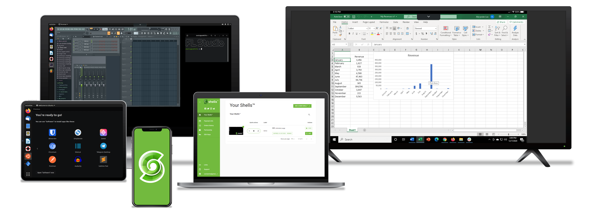

XeroLinux whilst no longer a Distro, it’s now more a collection of Projects/Scripts, created with a simple goal in mind, making ArchLinux easier to install and configure.
So far, project includes, the Ultimate Arch Post-Install Toolkit, a simple KDE Plasma installer script and finally a script that will make it easy to apply my Xero-Layan rice.
Check other pages out on the site for more information. And feel free to let me know what you think of the new site design. I am always looking for ways to make it better as time passes.
I will do my best to keep contributing to this awesome community. Mostly targeting ArchLinux and KDE Plasma. But who knows what the future holds ? I sure don’t.
Cheers y’all 😀
Projects
The Toolkit.
This toolkit aims to be an all-in-one solution for post-installation, expediting your Arch setup. It’s offered as use at your own risk type of thing, with minimal support. You will have to rely on yourself and your own knowledge and ability to do research when it comes to the provided tools and your setup.
It’s crucial to clarify that this toolkit is NOT intended for custom Arch-Based distros. While some elements might function, I can’t ensure seamless compatibility due to potential conflicts arising from differing tweaks and repositories. To ensure optimal performance, it’s strongly recommended for use on a clean Pure-Arch install executed through the ArchInstall script. Nor will it provide Arch or DE/WM installations.
To find out how to use it and what it has in store, please head on over to toolkit’s Github Page and check out the Wiki for more detailed information.
Xero-Layan Rice
Well, I dunno how to describe this besides that it’s the best KDE rice I have ever created, in my opinion. It has survived many upgrades, without missing a beat. Now since Plasma 6 it has developed a few small quirks, nothing major though. I will be addressing them as I figure out how to fix them.
Until then, if you want to enjoy said rice on your system, feel free to teleport to Github to see how you can do that… And have fun.
Xero-Plasma Install Script
Hmm… With the help of this script you will be able to install Plasma in one of 4 methods as you can see in the image below. Not only that, it will also install the nVidia-dkms drivers and do necessary steps to get things working without you having to lift a finger… Oh yeah it will also fix PipeWire and Bluetooth..
But please keep in mind that script is only intended for Desktops that have a single GPU (nVidia or Intel). Yes, I am sorry about not being able to support hardware I do not own lol.. However script will evolve as I get new hardware in. So for now feel free to teleport to Github to see how use this script… And let me know what you think.
Socials
How To Contact me.
There are many ways to contact me. Just make sure to select the right method. I will answer you as fast as I can, all i ask for is a little bit of patience. I will try my best to answer. If I don’t, it just means I am either too busy or power is out as it usually is here in Lebanon. ;)
Linux Related
Ok, so, if you want to ask questions related to Linux, you can do so by either joining the XeroLinux Forum or via the Mastodon instance. Project also has a YouTube Channel and a Discord Server. ;)

Support
If you want to support me financially during my country’s worst Economic Crisis in decades, there are 3 ways to do so currently. You can either do it via Fundraizr, Ko-Fi or by becoming a Github-Sponsor
System
Below are the specs of my main Rig, the one I use to test & build XeroLinux. Also the one I game on and much much more. I have 4 other rigs which are not as important lol.